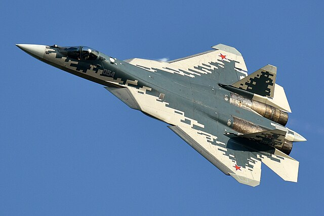

Sukhoi SU-57

Anna Zvereva Sukhoi Design Bureau, 054, Sukhoi Su-57 (49581303977).jpg
The sukhoi SU-57 is iconic for being Russia's first operational stealth fighter mode in 2010. The SU-25 is responsible for at least one air to air kill. The SU-57 has a max speed of mach 2. The SU-57 uses K-74M2 air to air missile. The SU-57 is a air superiority aircraft. The SU-57 was the first 5 gen aircraft to be destroy it was destroyed from a ukrainian drone when it was in its hanger. The SU-57 is still in service.
Back